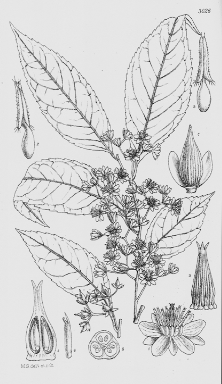

Sladeniaceae
Sladeniaceae is a small family of evergreen or deciduous trees, currently placed within the Asterid clade of flowering plants, though its precise ordinal position remains somewhat uncertain (possibly near Ericales). The family comprises only one or two genera: Sladenia from Southeast Asia and often includes Ficalhoa from Africa. They are characterized by simple, alternate, toothed leaves, small flowers with numerous stamens and a prominent nectar disc, and capsular or drupaceous fruits.
Overview
Sladeniaceae is a small and relatively obscure family of flowering plants consisting of trees. Its composition typically includes the genus Sladenia, with 1 to 3 species found in Southeast Asia (specifically Yunnan province in China, Myanmar, and Thailand). Often, the African genus Ficalhoa (with one species, F. laurifolia) is also included in Sladeniaceae based on molecular evidence (as per APG IV system), although it has sometimes been placed in its own family, Ficalhoaceae, or historically within Theaceae or Ericaceae.
The phylogenetic placement of Sladeniaceae has been challenging. While clearly belonging to the Asterid clade of eudicots, its exact position among the orders is not definitively settled. Molecular studies often suggest a relationship near or potentially within an expanded concept of the order Ericales, associating it with families like Pentaphylacaceae or Actinidiaceae. It represents a distinct lineage with a potentially significant role in understanding asterid evolution.
Plants in this family are trees with simple, alternate leaves and relatively small, inconspicuous flowers borne in axillary clusters. They are not widely cultivated or economically important but are of botanical interest due to their taxonomic ambiguity and disjunct distribution (if Ficalhoa is included).
Quick Facts
- Scientific Name: Sladeniaceae
- Common Name: (None widely accepted)
- Number of Genera: 1-2 (Sladenia, often including Ficalhoa)
- Number of Species: Approx. 2-4
- Distribution: SE Asia (Sladenia); Africa (Ficalhoa)
- Evolutionary Group: Eudicots - Asterids (Order uncertain, possibly near/within Ericales)
Key Characteristics
Growth Form and Habit
Members are evergreen or deciduous trees, sometimes large.
Leaves
Leaves are arranged alternately along the stems. They are simple, typically with toothed (serrate or dentate) margins, and possess pinnate venation. Stipules are absent (exstipulate).
Inflorescence
Flowers are borne in axillary positions, typically in few-flowered cymes or fascicles (clusters).
Flowers
Flowers are generally small, radially symmetrical (actinomorphic), and bisexual (perfect). Key floral features include:
- Calyx: Usually 5 small sepals, fused at the base, persistent in fruit.
- Corolla: Usually 5 distinct (free) petals, which are small and often shorter than the sepals.
- Androecium: Stamens are relatively numerous (typically 10-15 or more), with distinct filaments. They arise from outside or on the edge of a prominent nectar disc.
- Gynoecium: The pistil consists of 3-5 fused carpels (syncarpous). The ovary is positioned superiorly and is divided into 3-5 chambers (locules), each containing one or two ovules attached to the central axis (axile placentation). A single short style terminates in a lobed or capitate stigma.
- Nectar Disc: A prominent, fleshy, annular or lobed nectar disc is present, surrounding the base of the ovary (intrastaminal).
Fruits and Seeds
The fruit is typically a somewhat fleshy or dry capsule that splits open along the septa (septicidal dehiscence) in Sladenia. If Ficalhoa is included, its fruit is described as a fleshy drupe. Fruits contain relatively few seeds.
Chemical Characteristics
The family is not well-known for unique or defining chemical compounds, though tannins are likely present. It lacks the glucosinolates characteristic of Brassicales or the strong essential oils of Laurales.
Field Identification
Identifying members of the rare Sladeniaceae family requires careful examination of floral details, combined with leaf and habit characteristics:
Primary Identification Features
- Habit: Identify as trees.
- Leaves: Look for alternate, simple, toothed (serrate/dentate), exstipulate leaves.
- Flowers: Small, radially symmetrical, bisexual flowers borne in axillary clusters. Key features are 5 small, free petals, relatively numerous stamens (10+), a superior ovary composed of 3-5 fused carpels, and a prominent nectar disc at the ovary base.
- Fruit: A capsule (in Sladenia) or potentially a drupe (in Ficalhoa).
- Distribution: Restricted to specific regions of SE Asia (Sladenia) or Africa (Ficalhoa).
Secondary Identification Features
- Inflorescence: Few-flowered axillary cymes or fascicles.
- Petals: Petals often smaller than sepals.
- Stamens: Arising from around the nectar disc.
- Ovary/Style: 3-5 locules, single short style.
Seasonal Identification Tips
- Year-round: Tree habit and alternate, simple, toothed leaves are constant features for identification.
- Flowering/Fruiting: Occurs seasonally; the small flowers and subsequent capsules/drupes need careful observation.
Common Confusion Points
Distinguishing Sladeniaceae can be challenging due to its rarity and resemblance to other tree families with simple alternate leaves:
- Theaceae (Tea family): Often similar habit and leaves. Differ in typically having showier flowers, stamens often fused to petal bases or in bundles, and different fruit/seed details.
- Pentaphylacaceae: Another family sometimes placed near Ericales with trees/shrubs and alternate simple leaves. Differs in floral details like stamen number (often fewer) and ovary structure.
- Rosaceae (Rose family - some tree genera): Differ in usually having stipules (though sometimes deciduous), often a hypanthium, and diverse fruit types not matching the specific capsule/drupe of Sladeniaceae.
- Other Asterid tree families: Precise identification requires close examination of the specific combination of floral parts: 5 small sepals, 5 small free petals, 10+ stamens, prominent disc, superior 3-5 carpellate ovary, axile placentation.
Field Guide Quick Reference
Look For:
- Tree (SE Asia / Africa)
- Leaves alternate, simple, toothed, exstipulate
- Small flowers in axillary clusters
- 5 small sepals, 5 small free petals
- 10+ stamens
- Prominent nectar disc
- Ovary superior, 3-5 fused carpels
- Fruit a capsule or drupe
Key Distinctions:
- Combination of 5 small petals, 10+ stamens, prominent disc, superior ovary
- Exstipulate leaves (vs. many Rosaceae)
- Specific fruit type (capsule/drupe)
- Geographic location
Notable Examples
The family is very small, containing only one or two genera:

Sladenia spp. (e.g., S. celastrifolia)
(No common English name)
This genus comprises one to three species of trees found in montane forests of Yunnan (China), Myanmar, and Thailand. They have alternate, simple, serrated leaves and produce small, whitish flowers with 5 petals and numerous stamens in axillary clusters. The fruit is a somewhat fleshy or woody capsule.

Ficalhoa laurifolia
(No common English name)
Often included in Sladeniaceae (following APG IV), this is an evergreen tree native to montane forests in parts of central and eastern Africa. It has alternate, simple, leathery leaves with toothed margins and produces small flowers similar in structure to Sladenia (5 petals, numerous stamens, prominent disc). The fruit, however, is reported as a drupe.
Phylogeny and Classification
The phylogenetic position of Sladeniaceae has long been enigmatic. It is placed within the large Asterid clade of eudicots, but its precise relationship to established orders has been debated. Historically, it was associated with families like Theaceae or Dilleniaceae based on morphology.
Molecular phylogenetic studies confirm its placement within the Asterids but suggest an isolated position. It is often considered to be closely related to the order Ericales, potentially as a sister group to families like Pentaphylacaceae or Actinidiaceae, or perhaps representing an early diverging lineage within a broadly defined Ericales. Its exact ordinal assignment remains somewhat tentative in some classification systems, highlighting its unique evolutionary history. The inclusion of the African genus Ficalhoa alongside the Asian Sladenia, supported by molecular data, creates a significant biogeographic disjunction indicative of an ancient lineage.
Position in Plant Phylogeny
- Kingdom: Plantae
- Clade: Angiosperms (Flowering plants)
- Clade: Eudicots
- Clade: Asterids
- Order: Uncertain (Often placed near or within Ericales)
- Family: Sladeniaceae
Evolutionary Significance
The Sladeniaceae family, though small, is significant for:
- Phylogenetic Placement: Its uncertain but likely basal position relative to major Asterid groups like Ericales makes it important for resolving deep evolutionary relationships within this large clade.
- Biogeography: The disjunct Asia/Africa distribution (if Ficalhoa is included) points to an ancient origin, likely dating back to Gondwanan times, providing clues about historical continental connections and plant migration.
- Morphological Simplicity: Retains a relatively simple floral structure (free petals, numerous stamens, syncarpous superior ovary) compared to some more derived Asterid families.